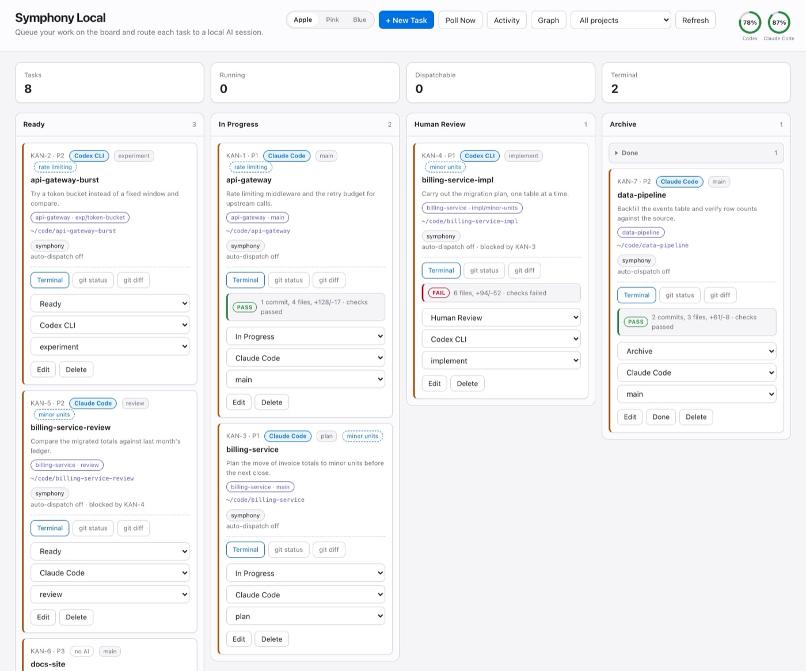
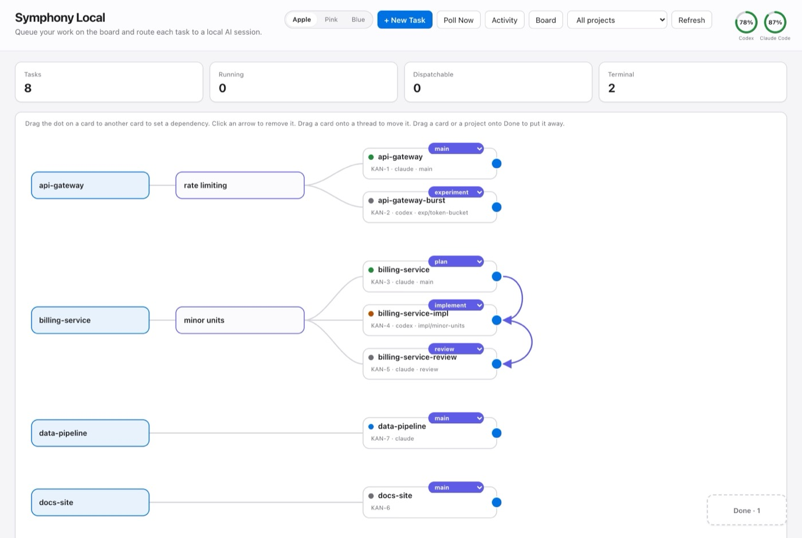
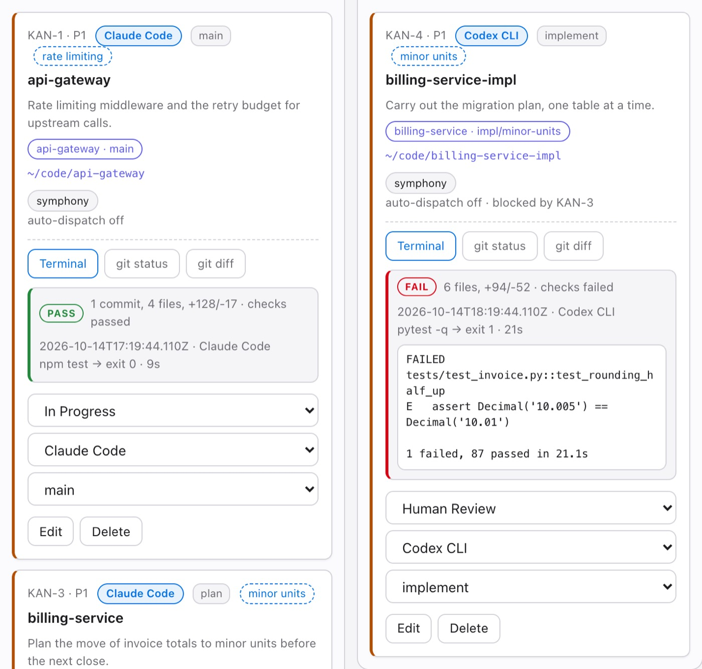

Software · Open source, MIT · Updated October 2026
Symphony Local
I usually have Claude Code or Codex running in several folders at once — a paper, a simulation, this website. Somewhere in there I lost track of my projects as a whole. The only way to know which session was working, which had finished, and which had been sitting on a question for an hour was to walk through the terminals one at a time.
I run a lot of terminals at once, and I had lost track of my projects as a whole. This puts all of it on one screen.
A board that moves itself
Each card is a project folder. Start a session in a terminal the way you already do. The board finds it, reads the CLI's own transcript, and moves the card: In Progress while a turn is running, Human Review when the session stops on a question for you, Ready when it is open and quiet, Archive when the process is gone. When a session needs you, a desktop notification says what it asked.
I never move the cards. A board I had to keep in sync by hand went stale the first time a session finished without telling it.

Every agent gets a role
Once several sessions work on one repository — one plans, one implements, one reviews, each in its own git worktree — a flat column stops saying how they relate. The graph view does: project → thread → session, where a thread is the open question several sessions are chasing.
- Every session carries a role — plan, implement, explore, experiment, review or main — set from a menu on its card.
- Drag the dot on one card to another to draw who hands work to whom. A task with an arrow into it is not auto-dispatched until the work before it finishes.
- Drag a finished card, or a whole project, onto the Done box to put it away, and bring it back from there.
Every project reads like an org chart.

Review the work, not the summary
An agent saying it is done is not evidence that the work is right. Every finished run records what it changed in git and whether the project's own check command still passes, and a failure shows the failing output right on the card.

It takes tasks, too
- Any agent you can start from a shell command can take a task, and each card picks which one. Claude Code and Codex sessions are followed in detail; aider and goose are detected as running.
- It starts agents only in folders under git, one worker per folder, and never in a folder where a session of yours is open.
- Usage rings in the top bar show how much of the Claude plan's session and weekly limits is used, and Codex usage beside it — five parallel sessions cost five times as much.
Yours, on your machine
It runs on 127.0.0.1 with no account. Node 20 or newer and nothing else to install — no npm dependencies, 92 tests on the standard library, and tasks live in a local JSON file. It is an independent implementation of the OpenAI Symphony service specification, rewritten around the way I work.
git clone https://github.com/jkleecontrols/symphony-kanban
cd symphony-kanban
cp data/issues.example.json data/issues.json
npm start # then open http://127.0.0.1:8787Whichever AI CLI you want it to dispatch has to be installed and signed in already.
It is early, and built around my own setup. Notifications and session detection use macOS tools, the server has no authentication so it should stay on your own machine, and auto-dispatch does not sandbox an agent or confine it to the task folder — a card made with + New Task has auto-dispatch on by default. The git guard makes an agent's changes visible and reversible, but it is not a fence. The board also shows snippets of session transcripts on screen. Nobody else has run it yet; if you try it, I would genuinely like to hear what breaks.